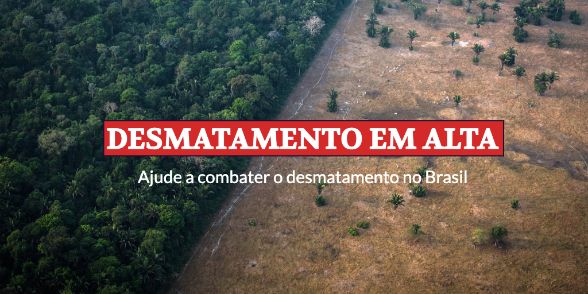

Essa leitura é dedicada às cores da coleta seletiva, para que você conheça as existentes e saiba o que cada uma delas significa. A coleta seletiva é um processo …

Lixo domiciliar é produzido majoritariamente nos domicílios. O que é lixo domiciliar O lixo domiciliar, que também pode ser chamado de lixo doméstico, são os resíduos de atividades domésticas. …
Hoje vamos nos dedicar a te explicar melhor o símbolo da reciclagem, este item que há tempos está presente nos diversos produtos que consumimos, e que faz parte, ou …
Lixo industrial é oriundo do setor secundário e um dos maiores poluentes do meio ambiente. O que é lixo industrial Lixo industrial, que também pode ser chamado de resíduo …
A poluição é um dos grandes problemas com que a humanidade se defronta. Há vários tipos de poluição. Neste texto, falaremos de alguns dos principais tipos de poluição, suas …
Lixo comercial é oriundo do terceiro setor, como supermercados, papelarias, agências bancárias, dentre outros. O que é lixo comercial O lixo comercial é proveniente de diferentes esferas do setor …
Lixo espacial é considerado tudo que está na órbita da Terra e que se tornou obsoleto para estudos ou sem utilidade. O que é lixo espacial Lixo espacial é …
Lixo radioativo, também chamado de lixo nuclear, é constituído por elementos radioativos que deixaram de ser úteis. O que é lixo radioativo Lixo radioativo é o resíduo oriundo de …
Lixo é considerado algo que não tem aproveitamento e é descartado. Pode ser qualquer material proveniente de trabalhos domésticos ou industriais. Quais os tipos de lixo existentes Observe a …
A reciclagem de plásticos é um dos processos de reciclagem mais realizados atualmente, embora ainda não dê conta do tanto de plástico que ainda é indevidamente descartado na natureza. …
O cerrado é um dos biomas mais significativos. Além de apresentar características ímpares, é um patrimônio natural. O que é cerrado O cerrado é um dos biomas mais notáveis …
A Mata Atlântica, que contempla florestas nativas e ecossistemas associados, é considerada uma das florestas mais extraordinária em diversidade no planeta. Isso se dá devido à riqueza de florestas, …
A floresta tropical é tida como um tipo de bioma, sendo considerada o maior entre eles, quando levamos em consideração a sua variedade e produtividade. Seu nome se dá …
Aqui, neste artigo, falaremos sobre os combustíveis fósseis. Quais são as características de seu uso e suas consequências para as pessoas e para o meio ambiente. O que são …
O buraco na camada de ozônio é um problema que até pouco tempo atrás costumava ser natural, mas que, como resultado da ação humana, vem aumentando gradativamente. Continue lendo …
Falar sobre fontes de energia tem se tornado cada vez mais necessário, uma vez que é de conhecimento que este recurso pode causar diversos impactos negativos ao planeta. Além …
A energia nuclear é uma das fontes mais utilizadas atualmente no mundo, uma vez que se mostra eficiente e simples de ser produzida. Mas, saber como é o processo …
A energia não renovável é uma das grandes preocupações de quem visa maneiras de tornar o mundo um lugar mais sustentável. Isto porque, atualmente, as fontes deste tipo são …
A energia solar é uma das fontes de energia que mais tem se falado nos últimos tempos, quando se tem discutido cada vez mais sobre o uso sustentável de …
A energia geotérmica se mostra como uma das alternativas ao uso de combustíveis fósseis para a produção de energia elétrica. No entanto, este recurso ainda não é tão difundido …
A energia elétrica representa uma das maiores descobertas da humanidade, visto que trouxe diversas possibilidades ao longo da história. No entanto, quando se trata de sustentabilidade é importante discutir …
Pegada ecológica está relacionada aos impactos deixados pela ação do homem no meio ambiente. O que é pegada ecológica Pegada ecológica é um termo criado para avaliar os padrões …
Ecologia é uma ciência que estuda a relação entre os seres vivos e o ambiente em que vivem. O que é ecologia Ecologia analisa a relação entre os seres …
Neste artigo, vamos tratar do monóxido de carbono, um dos componentes da poluição do ar. Falaremos de suas características, sua origem, seu impacto sobre o meio ambiente e seus …
Aqui, neste artigo, falaremos sobre a poluição sonora. Como se sabe, há vários tipos de poluição. Além da poluição sonora, podemos citar como exemplos a poluição da água, a poluição do ar, a poluição …
Apesar de o nome parecer um tanto estranho, o conceito de composteira é bastante simples de ser compreendido! Para se entender como a composteira funciona, primeiro é necessário que …
Muito se fala em reciclagem e a primeira ideia que nos vem à mente é de pegar algo que normalmente iria para o lixo e darmos um novo uso …
Uma vez evidente o desequilíbrio entre desenvolvimento econômico e o meio ambiente, muito tem se falado sobre a preservação dos recursos naturais do planeta. Crescem as exigências para a …
Agrotóxicos, pesticidas, herbicidas, fertilizantes, praguicidas, o nome não importa, o que se discute é o risco que a exposição a esses produtos químico pode trazer para nossa saúde e …
Você sabe o que significa o conceito de sustentabilidade ambiental? E como ele é empregado e pode mudar o ambiente de uma empresa? Neste artigo, vamos ensinar os conceitos …
Até certo ponto, os radicais livres não são considerados uma ameaça para a saúde. Pelo contrário, eles podem se tornar bastante úteis no combate a inflamações, matando bactérias e …
O gás metano é conhecido como um dos principais agentes causadores da aceleração do efeito estufa e da degradação do meio ambiente. Sendo uma grande fonte de energia, esse …
Por ser considerado um dos recursos naturais mais complexos do planeta, o solo é um elemento fundamental para a manutenção da vida humana, dos ecossistemas e dos ciclos naturais. …
Apesar de ser uma expressão que está se tornando cada vez mais comum, o termo pode causar algumas dúvidas, deixando algumas pessoas inseguras sobre o que é biodegradável. A …
Desde a última década, a energia eólica se tornou bastante comentada no Brasil. Muitos falavam dela como uma fonte de energia que viria para trazer muitas vantagens para o …
Todos nós já ouvimos falar de lixo hospitalar e sabemos que é necessário evitar contato com o mesmo, tendo ele todo um tratamento especial de isolamento. Porém, o que …
A poluição das águas é um fenômeno que ocorre quando elementos químicos, físicos ou biológicos contaminam a água. Isso pode ser nocivo para tudo que depende dela, como as …
O desmatamento atualmente está em níveis alarmantes. Muitas florestas originais já foram diminuídas a pequenos trechos. O maior exemplo disso é a Mata Atlântica. Entretanto, áreas como a Floresta …
Há muitas formas de se fazer negócios atualmente, isso é um fato. No entanto, algumas delas não visam apenas ao lucro exacerbado sem medir as consequências. Por conta das …
Quando pensamos em poluição, automaticamente associamos a lixos espalhados pelo chão ou mesmo gases transformando o oxigênio num ar tóxico. Pouca gente lembra, no entanto, que há tipos muito …
Por conta da alta demanda tecnológica existente, nos dias atuais as formas de poluição são muito variadas. Seja a poluição do solo, da água ou do ar, os resíduos …
Os óleos essenciais são substâncias extraídas de plantas, por isso são completamente naturais e de origem vegetais. Possui muitas utilizações possíveis, a depender da planta escolhida. Seus aromas provocam …
Todos os resíduos de lixo possuem uma origem. Tudo o que nós vestimos, comemos, utilizamos e assistimos provocam impactos no meio ambiente. Há os produtos que geram mais impacto …
A humanidade, desde os primórdios, deixa resíduos por onde passa. Antigamente, no entanto, esses resíduos eram predominantemente de materiais naturais, que poluíam menos o ambiente. Nos dias de hoje, …
A escassez de água é uma realidade em todo mundo, por isto cada vez mais pessoas têm optado pelo uso de cisternas em sua casa. A cisterna é um …
Você já ouviu falar sobre o amianto? Este mineral está extremamente presente em alguns objetos do dia a dia eletrodomésticos, cabos, móveis, entre muitos outros produtos tão usados os …
O Brasil é um dos países mais ricos em água de todo o mundo. Há uma incontável quantidade de rios, bacias, lagos, lagoas e mananciais, logo surge o questionamento: …
O processo de Desmatamento se agravou no Brasil nas últimas décadas e tem ocasionado diversas consequências negativas para o meio ambiente, influenciando diretamente na vida da população. Para conhecer …
A poluição radioativa é considerada a forma mais perigosa de poluição. Ela é causada pela poluição gerada por radiação, que é o efeito da propagação da energia por ondas …
Desde que somos crianças, nos acostumamos a ouvir de nossos pais que não devemos desperdiçar comida, pois existem muitas pessoas que necessitam e não têm o que comer. Assim, …